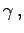

Inhalt Index DeskTop Bronstein

 Geometrie Sphärische Trigonometrie Grundbegriffe der Geometrie auf der Kugel
Geometrie Sphärische Trigonometrie Grundbegriffe der Geometrie auf der Kugel


Dreikant oder Triederecke wird eine dreiseitige körperliche Ecke genannt, die von drei, von einem Scheitelpunkt 0 ausgehenden Strahlen sa,sb,sc, den Kanten, gebildet wird (obere Abbildung).
Als Seiten des Dreikants definiert man die Winkel a,b und c, die von je zwei der Kanten eingeschlossen sind. Die Gebiete zwischen zwei Kanten heißen Seitenflächen des Dreikants. Die Winkel des Dreikants sind die Keilwinkel und  die von je zwei der drei Seitenflächen eingeschlossen werden. Ein Dreikant schneidet aus einer Kugel um den Scheitelpunkt 0 ein sphärisches Dreieck aus (untere Abbildung). Die Seiten und Winkel des sphärischen Dreiecks und des zu ihm gehörenden Dreikants sind einander gleich. Deshalb gelten Sätze, die für den Dreikant hergeleitet wurden, auch für das zugehörige sphärische Dreieck und umgekehrt.